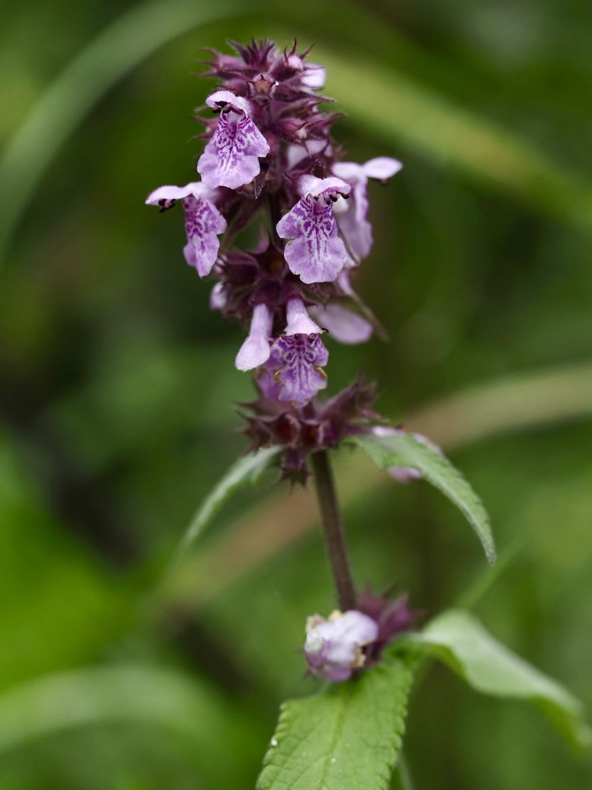
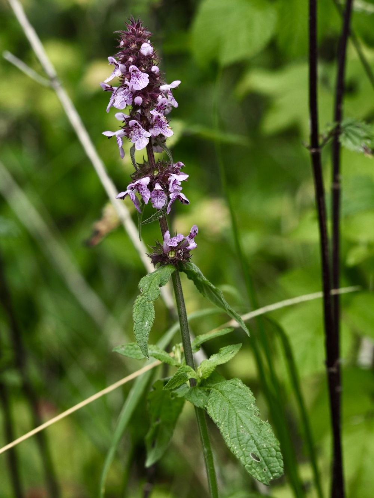

Lippenblüten als Insekten-Architektur
Wie alle Lippenblütler hat auch der Sumpf-Ziest die typische zweilippige Blütenform: Eine helmartige Oberlippe schützt Staubblätter und Narbe, eine dreilappige Unterlippe dient als Landeplatz und Lockfeld. Diese Konstruktion ist perfekt auf Hummeln zugeschnitten — sie kriechen tief in die Blüte, streifen dabei mit dem Rücken die Staubblätter und tragen den Pollen weiter.
Heilpflanze, die niemand mehr kennt
Im Mittelalter war der Sumpf-Ziest eines der wichtigsten Wundheilkräuter: Frische Blätter wurden auf Schnittwunden gelegt und sollen tatsächlich antibakteriell und blutstillend gewirkt haben. Heute ist er aus den Apotheken verschwunden — moderne Mittel sind effizienter, und das Sammeln in der Natur ist wegen des Habitatverlusts unverantwortlich geworden.